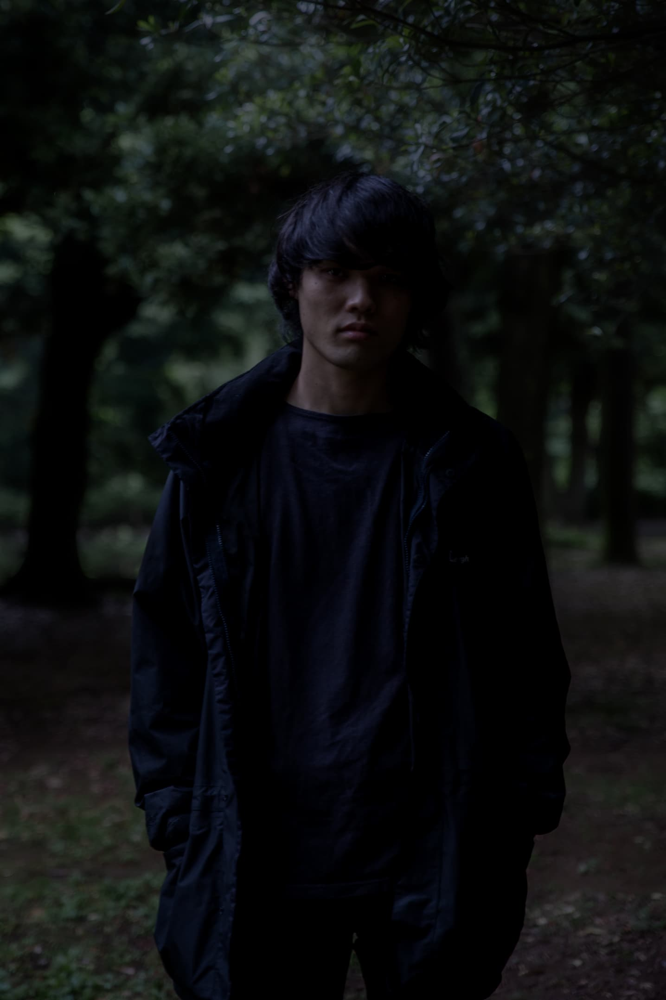

photo by Sho Sakaguchi
Mamoru Watanabe
Artist, Media Designer, and VJ
Born in 1992 in Tokyo, Japan
Lives and Works in London, UK.
His work in art and design and takes a new apploach of...
Tumblr /
Twitter /
Instagram /
Medium /
Facebook /
Behance